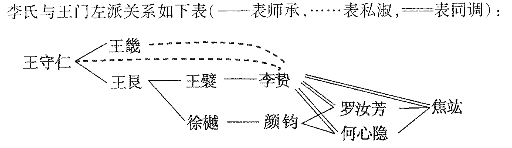

萧公权：《中国政治思想史》，“第三编：专制天下之政治思想——转变时期（上）”，北京：商务印书馆，2018。
第十六章：明代专制思想之反动与余波
第一节：刘基
自秦汉以来，专制天下之政治思想，一脉流传。千余年中，虽间受攻击，而根本未能动摇。盖辗转于君主政体之下而无民治之经验，故“专制”之思想不能打破。局促于小九州之中而无国际之往来，则“天下”之观念不能放弃。积之既久，不独现代民权、民族之新学说横遭阻碍，不得萌芽，甚至先秦固有之贵民攘夷思想亦渐趋隐微，不复得为显学。
明代政论特点之一，即为注意于民本、民族之观念，上复先秦古学，下开近世风气。明初之刘基、方孝孺，与明末清初之黄宗羲、王夫之分别代表此两种趋势，皆对专制天下之弊政加之以严重攻击。
然而此数人之学术既仍本之儒家，而明代一般之儒者更不能脱专制天下之结习。就大体言，明代儒学仅为转变时期之前夕思想，不足以预于转变潮流之本身也。
刘基，字伯温。生当元季，目睹政荒民困之事实，其立言远承孟子之坠绪，而深切愤激直可与林慎思先后呼应。然林氏只论人事，刘氏兼明天人，似尤与孟子相近。
刘氏以“天”为政权最后之根据。然其论天人之关系，则一扫阴阳家之说而徘徊于主宰与自然二观念之间。刘氏以天为有气质之病，而信人力可以助天之未能。若遭遇昏主暴君，则疾不可治而反以加重。
虽然，此就天气质之变态言之耳。就其本心之常态言，则圣人非善医而实“善盗”。所谓盗者，乃潜取而非窃夺。天不言，圣人代行其事，迹近专擅，故名之盗。论其效用，则善盗之圣人，本天理物情以行之，赞成化育，功德显明。虽加盗名，实不为罪。若虚耗天生，无益万类，则真为盗贼，与圣人参天地以为四海之君者不可同日而语。
就天之心与理言，则圣人执用其权力，就天之气质言，则圣人医治其疾病。刘氏此说与传统儒家思想以天为纯然主动，人为纯然受动者，固已显有区别。而其否认天谴，尤与董仲舒以来之天人学说相歧。此天工人代说逻辑上之必然结论，亦天权说理论上之一进步也。
天人之关系既明，吾人可略述刘氏之民本思想。此则悉守孟子遗教而深致讥于元季之苛政。刘氏认定政治之惟一目的在立君以养民，而养民之要务在“聚欲去其恶”。若病民以奉君，或泄沓以从事，则人心离散，君位动摇。
当注意，刘氏所言皆据民本之旨以明革命大义，而始终未尝一及种族夷夏之辩。刘氏虽深讥蒙古政府之腐败，然其讥之者以其为无道之政府，非以其为异族之政府。
第二节：方孝孺
方孝孺（1357-1402），字希直，一字希古。
刘基论政舍民族而专阐民本，方孝信则兼明二义，而其攘夷言论之激扬深切，殆为前此之所未有。
方氏于理学宗传之中虽纯居继述之地位，其政治思想则不乏创新之特见，约有四端：
- 政治源起。
- 君主职务。
- 宗法井田。
- 民族思想。
方氏认定人类生而有自然之不平等。政治之功用在补救不平等之困难，使人人得遂其生。君师之立所以济自然之不平，然其为用则又在乎设人为之不平，以节制情欲，维持伦序。人为之不平等足以救自然不平等之失，其本身未尝无自然之依据，而尽出于圣人之矫揉造作。
就政治之作用言，方氏虽以不平为要旨，而就政治之目的言，则方氏立论一承孟子贵民之教，认定君位以君职而尊，非本身有可贵之性。君职在于养民，且有二术：
- 用天之所以产养天民。
- 使民安生复性，然后治之。
言仁者必有仁政，而义与礼乐亦各有其政。其条目虽繁，而要以宗法井田二者为主干。其虽为废弃已久三代之古制，而方氏坚信其可以复行于明初人口稀少之时。方氏乡族制度欲凭全体乡民自动之力量，以推进有关政教之重要事务，较吕氏《乡约》在原则上更近于近代之地方自治。考方氏所以得有此见解者，似由其对于专制政府之失望。虽然，其非完全自治，亦非真正民主。
《春秋》夷夏论之古义，至明初复燃，而方氏始光大之者也。明以前，中国两经大规模之外族侵略或征服（北朝与蒙元），而儒家少有申明膺攘之义者。朱元璋《谕中原檄》为中国最先表现之民族国家观念。方氏承檄文之意而引申之，而附其说于其历史正统之讨论：“附统”去“正统”未远，而“变统”当贱视；取位之标准乃君臣之分与华夷之别。其民族思想之透辟，前所鲜见。
第三节：张居正
若以刘、方代表专制思想之反动，则张居正之尊主定国殆为专制思想之余波。
张居正（1525-1582），字叔太，号太岳。
张氏乃实行者而非思想家。然其立论每有特见，非一般儒者或理学家所能范围。
张氏论学，揭致用之标的而寓尊君之宗旨。有似宋代之功利，思想而不尽同。陈亮等视心性之学为无用，张氏则欲兼性命、经济而用之。
张氏以为今王之政令，即学术之指归。若于此外别立门户，斯为离经叛道。故教育政策有三端：
- 抑异学。
- 禁私学。
- 不许生员干政。
张氏之教育政策虽以建立国学为目的，而其论据实假定国家政令具有绝对之价值，初不必问政令之内容是否合于最完善之标准。于是学术之本身，不复具有绝对之价值。
然而按实际之结果，则张氏既不能消除纷紊之学风，亦未尝培成忠朴之士气。徒使倔强者愈趋于反抗，猖黯者逢迎以取利禄。士风更下，元气大伤。此则专制政术本身内在之缺点，其咎不当由张氏独任矣。
张氏论学之要义，略如上述。其论政之宗旨，殆可以“刚”一字括之。其为政“以尊主威，定国是，振纪纲，剔瑕蠹为务”。虽然，张氏治体用刚之说固与鞅、斯有显然之区别，张氏欲矫泄沓之失而未尝有意于苛刻。其虽以专制为必要之手段，其论政治之目的则仍守儒家民本之旨。
第四节：吕坤
吕坤（1536-1618），字叔简，号心吾。
刘、方针对亡元苛政而阐贵民之旨，张氏针对晚明弊政而为专制张目。吕坤则折中二者之间，兼采尊君贵民而无取于刚严有为之治。就大体言之，其思想虽趋于乐观，而亦隐含对君主专制失望之意，于诸人外别树一帜。
吕氏论学，一本致用之宗旨。一切性命、天人微窈之说，无补“国家之存亡、万姓之生死、身心之邪正”者，皆认为非学者所当究。
致用为学者之天职，而伦常又为处世之纲纪。君父之尊尤当重视。然吕氏尊君之论未尝离贵民而独立。民以君尊而定，君以定民得尊。定民为目的，尊君为手段。君威与民命，非相反而实相关。
吕氏又以“势利”解释君民之关系，此则近乎叶水心“势治”之论条理较为完密。操”势利“之术有五：
- 以势制利。
- 势利分享。
- 揽势必专。
- 分利必均。
- 君不专利。
“势在上，利在下”，此古代君治民享，仁惠专制理想之另一表现而已。然而吕氏深知徒用高压政策不足以为治，故反复重申孟子顺民之古义以为专制君主之棒喝。
吕氏生当张居正厉行“刚”治之时而发为顺民之论，其反对专制之意，极为显明易睹。又吕氏论学，虽主致用而其最后之政治理想则为无为而治。此尤足表现其反对专制之态度。
吕氏倾向于认历史为退化之过程，而以天道气运说明其必然性。吕氏九天之说有似邵雍之《皇极经世》，而实不相同。邵氏之说为彻底悲观之宿命论；吕氏虽亦倾向于悲观，置盛世于以往，然犹信人力可以回天：专制天下昏君乱臣所散播之种种罪恶，种种痛苦，圣人可以洗荡廓清之。
吕氏为一实践之政治家，其论治术颇多具体扼要之言。其民务与“乡甲约”按养、教、治三事规划条目，而“乡甲约”合乡约、保甲为一，更为前此所未有。
第十七章：王守仁与李贽
第一节：王守仁
王守仁（1472-1529），字伯安，学者称阳明先生。
昔孟子谓人皆有不忍人之心，而即以此心为仁政之动力。阳明之政治哲学亦以仁心为本，而参以《大学》之明德亲民。仁之本心，施于政事，则为明德亲民。二者体用可分而实为一事。
王氏虽推崇唐虞三代之理想，以为非后世“霸术”所及，然其所重视者乃心术而非制度。故三代之治虽美，后君当法其道而不可拘守其制。若心存功利，徒仿行迹，貌似儒学，而实已流于霸术矣。
阳明之论治术似少新意。其最可注意者，为近于近世地方自治制度之乡约、社学、保甲诸法。其南赣乡约则为明代乡约之肇始，内容详密，为人称道，约有四端：
- 约中职员出于约众之推选。
- 约众赴会为不可规避之义务。
- 约长会同约众得调解民事之争讼。
- 约长于开会时询约众之公意以彰善纠过。
阳明论政，大略以《孟子》、《礼运》为蓝本。虽足针砭专制，究非真出新创。
至其论学，则一扫乡愿之习，直欲与西汉以来之儒家正统思想挑战。盖儒学经武帝之推尊，遂为思想正统。中间虽受挫折，大体固占上风。至宋元之世，儒学化为理学，理学又专尚程朱。意窃佛老而语宗孔孟，辩入毫芒而本实因袭。末学弊极，浸至是非以孔子为权衡，纲常致个人于桎梏。迁延至明，殆已趋于僵化。于是陈白沙破朱学之落篱，求至道于己心。阳明继起，乃明揭思想解放之赤帜，发为学贵自得之论。
吾心能得道学之公，以为是非之权衡，以其能“致良知”故。人心之本体即是明德。私欲障碍则本体丧失。圣贤庸愚，同具此心。苟能致知，皆能明德。良知致人于平等，亦即使之得自由。人求得心，则一切外在之标准悉丧失其威权，而言语行为皆纯由个人自决。
良知学说似远承孟子，而含有打破偶像，摇动传统思想权威之倾向。至其门人王畿（1498-1583，字汝中，别字龙溪）、王艮（1483-1541，字汝止，号心斋）诸人，变本加厉，遂成更进一步之解放思想。王艮尤为左翼王学之宗师，王门出身平民者多受其教。王门传授略如下表：

心斋之政治哲学，大体上守阳明师法，尚无过激之论。再传之后，乃流于诡怪狷狂，引起士大夫之嫉视。然而心斋及其弟子本孔子“有教无类”、阳明良知平等之义，广教下层社会人士，其精神不仅有合佛家之普度众生，实略近现代之民众教育，其事之盛，乃秦汉以来所未睹。此亦王学打破传统之一端也。盖张居正等毁书院禁私学之动机既为巩固专制政权，则王门之布教平民，不啻无意中向专制作微妙之攻击。及李贽受王龙溪、罗近溪、何心隐、焦弱侯诸人之影响以立言，乃蔚为明代空前之解放思想。
第二节：李贽
李贽（1527-1602），号卓吾，又宏甫，初名载贽，号温陵居士，晚号龙湖叟。
李氏思想之形成，兼受其个人天性及社会环境之影响。李氏为一个性甚强，感情奔放之人。生当晚明专制政府恶化之时，上则权臣逆阉专国，下则科举道学坏才。愤世嫉俗，养成满腔郁勃不平之气；王学左翼之“禅狂”又有反抗束缚之倾向，复与李氏之个性相投。
卓吾多为激烈之言论，然其最起当时士大夫之反感者殆无过其反程朱理学之宇宙观、人生观与社会观。南宋理学有数特点：
- 究天人性命之理。
- 明天理人欲之别。
- 严王霸义利之辨。
- 谨君子小人之防。
- 重三纲五常之教。
凡此五端，悉受李氏攻击。
李氏论学，以当前实际之经验为依据，不喜一切抽象之玄谈。于是天理人欲之区分不能成立，而君子小人之判别亦随之失其根据。
理学家所谓君子者必不言功利，所谓小人者必不务道德。此种见解传播既久遂生两大悲果：
- 无用之儒臣。
- 伪善之君子。
李氏略袭宋代功利之说，认为正义必须谋利。重功业而轻名教，势必反对理学末流所产生之种种社会束缚。
李氏反理学思想之根源有二：
- 自由之天性：“生平不爱属人管”，弃官削发，漂流四方。
- 王学之影响：四十岁以后读阳明学派之书，友阳明学派之人，深受良知学说之影响。

李氏别依平等之义，发为较阳明更加彻底之自由思想。李氏认为人人皆具良知，而见理则各不同。就其各得于己者言，则个人为真理之权威。就其所见互异者言，则是非无一定之标准。故为学贵于自得，外此悉为魔障。学贵自得之理，由拘古迹，崇圣人，信经书，囿道统诸蔽有以障之也。
李氏生当专制势力方张，欧洲文化尚未大量输入之时，为此石破天惊之议论，其事尤为难能，宜乎国人皆曰可杀，而卒以身殉也。
个人自由为李氏思想之中心观念，依此观念以论政治，则不干涉与不烦扰为最合理之治术。
李氏之政治哲学非爱自由一端所可尽括。其虽禅狂，杂虚无，而其思想之大体固与儒家之仁学一脉。李氏重申孟子贵民，阳明亲民之说而透辟有加，纠正专制天下尊君贱臣之恶习。
李氏思想中含有不易调融之二义。李氏既本自适之义而主修身，又依博爱之义而主贵民，修身必用无为，贵民必用有为。然吾人勉强可以代圆其说。其关键在“有为”、“无为”二名词之定义，与乎李氏之治乱史观：
- 李氏大体承黄老之旨，以应乎自然或必然之需要者为圣王所用之治术。如此之治术，就其应乎需要，不为庸人自扰言，则为“无为”，就其有行动，有功效言，则为“有为”。圣人之作为皆出于必要而合乎自然，故有为而亦无为。
- 人类之社会生活时有变动，故治术之范围亦随之而易其广狭。上世生活愈简，范围愈狭。持与后世相较，则上世亦可称为“无为”而后世“有为”。上世固不可用后世范围广大“有为”之政，后世亦不可学上世范围狭小“无为”之政。颠倒误行，为害匪浅。
第三节：西学之初来与失败
吾人前谓明代刘、方、王、李诸家乃转变时期之前夕思想。盖此数人虽大倡民本、民族之说，以与异族政权及专制政治相抗，然其基本之观点与原则，仍有意无意间承袭传统思想之旧。故虽知贵民而未臻民主之观念，虽重民族而未具族国之观念。易词言之，明代最激烈最前进之政论，仍不能超越“专制天下”之范围，以达于“近代国家”之境界。
天主教士利玛窦至北京，西方之宗教学术始大量输入中土，为一部分士大夫所接受。于是东西文化首次为大规模之接触，而中国政治思想，以受此外来之刺激，亦遂有彻底转变之可能。
明末清初教士远来中土之主要目的为传教。其手段为以西洋之学术歆动士大夫。彼侪殆恐人文科学不易动华人之听，故颇致力于传播自然科学之知识。无论其用心何在，其所贶诚厚，而中国之机会亦至佳矣。所可惜者当时国人识见未真，于近代西洋文化之根本精神未有领会：
- 接受此文化者每买椟还珠，或仅取其中古精神之宗教信仰，或徒好其科学枝节之历法炮术。
- 反对之者尤不免故步自封，或据孔教以排天主，或尊释迦以拒耶稣，甚至于墨守旧日历法以攻测天新术。
于是新文化种子无由萌长。明末清初西学之失败，实使中国近代化之时期迟误逾二百年。
第十八章：明末清初之反专制思想
第一节：专制之覆辙
晚明重蹈蒙古专制苛政之覆辙，约有四端：
- 吏事之弊。
- 兵制之弊。
- 开矿之弊。
- 田赋之弊。
究其病源，实在于君主专制之一事。
明初刘、方所代表民本、民族思想两大潮流，后者以蒙古倾覆而暂失实际之意义，前者以专制存在而仍为空洞之理想。满洲入主，重建统制华夏之专制政权，前代遗民怀种族之奇耻，究兴亡之要因，于是排斥夷狄，批评专制，明初民本、民族之两大思想潮流，又重现于清朝之初叶。
第二节：黄宗羲
清初民本思想之主要代表当推余姚黄宗羲。黄宗羲（1610-1695），字太冲，人称梨洲先生。
梨洲出于蕺山之门。然其治学兼通经史艺数，合心性事功而为一，非阳明学派所能范围。梨洲不汲汲于致用，其《待访录》所陈之政治理想为其学术中最精彩之一部分。
《待访录》之最高原理出于《孟子》之“贵民”与《礼运》之“天下为公”。其政治哲学之大要在阐明立君所以为民与君臣乃人民公仆之二义。
古今为君者之观点不同，古以得君而利者今乃因以致祸。人君以利民为职分。能尽职者民从之，不能尽者民叛之。人君不明乎为君之职分，不徒害及百姓，终亦自祸其家，两败俱伤。梨洲于君主专制政体有此悲观之结论，其意义重大远过于鲍敬言《无能子》等之“无君”。
君民之关系既明，梨洲乃进论君臣之关系。其立言亦悉依《孟子》，一扫专制天下“君为臣纲”之传统思想。世俗之事君者误认臣乃为君而设，不问君尽职与否，而惟从其所命，不问百姓之安危，而惟求君位之巩固。揆之古义，允为不臣之尤。
梨洲深察三代以下乱多治少之故，认定君职不明，天下为私，乃其最后之症结。秦汉以来制度之坏，其病源亦在于此。
世俗有流行之谬说二事：
- 法祖之谬说。
- 治人之谬说。
梨洲变法之建议可分为国体、官制、学校、选举、兵制、田制、财计诸端。梨洲既深恶秦以后之专制政治，故其论国体，势必倾向于封建之分治。然封建既不可尽复，梨洲乃折衷于封建郡县二者之间，主张行唐代方镇之制。
梨洲论官制，注意于宰相、胥吏及奄宦之三事，而亦皆针对明代专制末流之弊。明太祖罢相之害，本身不小，复与阉宦之害相推助而为祸益烈。官制之坏，上由奄人而下则出于胥吏。梨洲认胥吏有四害，而其最大者殆为弄法与据位之两端。
梨洲反对专制之意，于其论学校、选举中尤为明显。学校之用不仅在于养士，亦在于培养健全之舆论，监督批评政府。学校作育人材之目的可从教学及选举两方面达之。教育之内容当限于五经、兵法、历算、医、财等有用之科目。学校既有真才，则科举之积弊亦得因以大体革除，稍加改良，亦不失为一取士之良法。其论田制、兵制似带有复古封建之意味，而实亦针对明代事实而发。
梨洲贵民之政治哲学，首尾贯通，本末具备，为前此之所罕觏，不啻向专制天下之制度作正面之攻击。然细绎《待访录》，则觉梨洲虽反对专制，而未能冲破君主政体之范围，仍蹈袭孟子之故辙；其身躬与反清复明之运动，而于民族大义则未有坚确之认识。
第三节：唐甄
梨洲重民本而轻种族，唐甄（1630-1704）推广其风，仕于清廷而大倡养民之说。甄原名大陶，字铸万，号圃亭。
唐氏之学直宗阳明，远承盂子其论学以致用为归，而论治则以养民为主。汉儒有明道不计功之理想，宋儒以精研心性为学问，唐氏皆加驳斥。
《潜书》论治，虽饶至理，以乏创见，惟其养民之宗旨与黄梨洲相发明，足觇一时之思想趋势。
民之乱也，其责不在民之好乱而实由于上之失养。推其失养之因又在乎君臣之不职。
贪吏之害，人皆知之。其有身不必有攘民之行而心不免于忘民者，为数尤众，而反为论政者所忽视。是又不可不加以纠控者也。
官不能治，非官之罪也。探本穷源，其病根实在君主专制政体之本身。治天下者惟君，乱天下者惟君。如欲于制度本身之外，追究君主个人之责任，则三代以下开国之君决不能免残贼之罪名。所可叹者，帝王之贼，其罪綦明，而究不得致诛也。
第四节：顾炎武
顾炎武（1613-1682），字宁人，初名继绅，后更名绛，明亡后始名炎武。
黄顾二家同主学以致用，而其思想之根本态度有异。梨洲受王学之影响，亭林并朱陆亦隐加抨击。两家同为道学之反动，而后者更为彻底。二家并生明清之际，处相同历史环境之中，故其政论亦复大体相近。然梨洲由民本之义以攻击君主专制，亭林求矫正过度集权之流弊，而无取于贵民之说。
亨林反对专制集权之主张，大旨略似梨洲之论方镇。亭林认封建制度乃古代圣人公天下之大法。然时势既殊，分国之制随以消灭。封建郡县行之既久，各有其弊。封建尾大不掉之弊，前人言之已详；郡县过度集权之弊，则至南宋始为叶水心等所指陈。封建今不可复，“寓封建于郡县之中，而天下治矣”，应使地方官吏“分天子之权以各治其事”：
- 尊令长之秩而与以生财治人辟属之权。
- 慎令长之选而奖以世官之任。
- 罢监司而设郡守与巡方御吏。
亭林以县为地方政府之单位，然又恐县令过度集权，而欲于一县之内行分权之制以济之。其对地方政治与农村生活之重视，殆为前人所未及。其反对集权之深意又可于其提倡宗法与封驳二制见之。
专制之弊，又不仅生于过度之集权。繁琐之法，乃专制天下不能为治之一重要症结。专制之君欲密法网以自固，而反因之以召祸。
观亭林反专制之论，大体呼应梨洲，互相发明。然梨洲申民本而重舆论，亭林则恶晚明士风之嚣张而欲痛加抑制。此则似为两家相异之一大端。
亭林论政颇重正风俗、养人材之二事，而深斥明代科举，以为败坏人材，甚于始皇之焚书坑儒。科举所培养之生员，为害有四端：
- 乱政。
- 困民。
- 结门户。
- 坏人材。
梨洲重视士人，欲令天下政事之是非，决于京师郡县学校之公论；今亭林痛斥生员而欲加以缩减废除，其主张不啻与梨洲背道而驰。
然而吾人略加辨剖，即知两家立论之相异，实不如初睹之明显。盖梨洲所欲倚为天下正论之机关者，非寻常场屋中之生员，而为曾经改革之学校；亭林所斥责者乃乱政败俗之生员，而非士大夫之清言正议。一注目于理想中学校之功用，一致意于事实上生员之缺点。非两家对于士大夫在政治上之地位，有根本不同之见解也。
第十九章：王夫之
第一节：制度论
王夫之（1619-1692），字而农，号薑斋，学者称船山先生。
船山思想上最大之贡献，为其亳不妥协之民族观。其论政治制度，纯以历史眼光为判断，亦多精辟之处。船山所提出制度之原理有二：
- 法制随时代以演变。
- 一代之法制自成一整个之体系。
传统儒家每喜言法古。船山一反其说，认定势理相随，变而益进，乃人类社会生活之必然趋势。世儒每以破坏三代古法之罪归之秦政，不知封建之终究演变而为郡县，乃势理之必然，而亦政治之进步。
船山不徒一扫秦汉以后“两端争胜”之说，即黄、顾所言亦当在攻排之列。梨洲欲复方镇，亭林欲寓封建于郡县之中，虽明知封建不能复行，而均主张修改郡县之制，使与封建相近。船山独认郡县为中国政治演变之必然结果，不容后人为任意之取舍。黄、顾深惩宋明专制之弊，船山立论则不专对一时一代之得失而着眼于政治进化之客观事实。前者乃改造家之主张，后者则近乎科学家或历史家之案语。吾国往昔不乏改造之思想家而较少纯粹之学者。准此而论，船山学术，似尤在黄、顾之上。
船山虽反对一切守旧复古之政策，认为制度宜适时应世，而大体倾向于重视历史之演变，反对人为之因革。势也理也皆出乎天，而非人类所能任意操纵。一切因循墨守，躁进纷更之政策，皆当摒弃。
船山论制度之第二要义为一代之法自成系统，不容割取片段而能施行见效。本此原则以论历代政制，船山每得迥不犹人之卓见。姑举选举、井田、兵农三事以概其余：
- 论者或以为不如三代、两汉乡举里选之能得人。船山辟之，以为法无有不得，亦无有不失。选举乃封建天下政治体系中不可分之一体，断不能行于郡县天下。
- 三代井田赋税之制为后儒所称颂，船山亦以为不可复行于封建既废之郡县天下。均田、限田亦不可行。郡县天下法度之根本精神为自私，为不平等。限田以均公为目的，断然不能与之相合。勉强行之且为民害。
- 三代寓兵于农，文武合一，大为后儒所称许。三代之后，战术已精，杀伐渐烈，为兵者须具有专门之训练与特殊之性格，断非一般农民所能胜任，兵农两分，不可复合。
船山论制度之言，卓绝精辟，不蹈袭，不凿空，就事实以立原理，通古今而权得失。其态度之谨严，眼光之敏锐，二千年中，殆鲜有其匹。即使船山立言，仅止于此，已足自成一家而丝毫无愧矣。
第二节：民族思想
船山认定种族之自存自固，乃自然界之普遍规律。政治组织之基本作用，即在于保类而卫群。
立君所以卫群，则当坚持一族之政权，必由本族之君自掌，而断不容异族之侵僭。易词言之，一切国家，皆当为民族国家，一切异族之政权皆大背纪群之义。持此大义以论往史，得失昭然，是非可睹。
船山民族本位之政治观与历史观已多独到之论。至其抛弃传统思想中以文化为标准之民族观而注重种族之界限，尤为前人所罕发，足与近代民族主义相印证。
《春秋》公羊家以夷夏之区分，系于行动之文野。推之至极，则民族既依文化之高低以划界，种姓亦随文化之混同而相融。种界失其谨严，许衡之流遂得援用夏变夷之旨以屈膝于蒙古。船山乃就地理环境以解释种类之差别，而认文化上之差别生于种类上之差别。既非出武断之区分，则亦不容任意混合。否则大防自裂，祸乱随生矣。
中国不容夷狄之侵犯，其义有二：
- 中国疆土之不可侵犯。
- 中国文化之不容侵犯。
船山虽不以文化区分种姓之界限，然其论华夷畛域则随处明示贵华贱夷之态度。此不仅本诸群类自保之义，而亦缘船山认定中国之文化高尚优美，远非外族之所能及。
虽然，船山更有一石破天惊之论焉，则其谓文化有兴亡起伏之迹是也。船山以为今日中国之文化虽美，然推原邃古之时，逆想摧残之后，亦有沦澌隐灭可能。吾人殊不可过度自信或乐观。
夫文明不必永存于一地，中国亦有退为夷狄禽兽之可能。然就其思想之大体观之，船山迨不欲作消极之悲观，而希望君臣上下共本保类卫群之宗旨，兢兢业业，以维持神区之家法于勿坠。则船山所揭橥者不仅为二千年中最彻底之民族思想，亦为空前未有最积极之民族思想也。
第三节：吕留良与曾静
黄梨洲、顾亭林、王船山等所参加之覆清运动及所鼓吹之民族思想虽暂时归于失败，然其潜伏之影响则颇为深远。其及于平民者发为各地之秘密结社，酝酿推移，至太平天国而产生大规模之实际行动。其寄于士大夫者则大体上仍为文字宣传，吕留良、曾静等其尤著者也。
吕留良（1629-1683），字用悔，号晚村。曾静，号蒲潭，湖南人。晚村鼓吹民族思想之议论著作，闻而兴起者甚众。至雍正时，曾静及其门徒欲利用岳钟琪之兵力乘清室之内争以倾覆满洲之政权，然尽遭杀害，一切书籍悉与毁禁。震动一时之民族运动遂全归失败。
晚村不承认满洲之政权而望其颠覆之“悖乱”议论，非仅含有排满之情感，而实基于一贯之民族观念。
昔孔子许管仲不死子纠之难而称之，谓“微管仲吾其被发左衽矣”。晚村看此句，谓一部《春秋》大义，有大于君臣之伦者，何以后世多不能明？盖为制之弊政与陋儒之曲学皆足以害之。儒者沉溺于功利自私之专制政治中，遂亦一变孔孟家法而惟利是图。
专制政治败坏君臣之义，其祸害及于生民者固已甚大。而其流恶之极更至于泯灭夷夏之防，使中国之儒者自陷于被发左衽而不觉。后儒不明《春秋》，不述《孟子》，尊君好利过甚，竟至并异族之君而奴颜婢膝以事之。彼绝不自羞，而假借程朱之道统以为掩饰，遂资陆王攻击之口实。
明末清初之政论家，如黄梨洲源出王阳明，王船山私淑张横渠，顾亭林不守理学藩篱，而晚村独欲保全朱子，斤斤为之申辩。其原因似可有二：
- 门户之见：晚村尊朱殆由于师友之传授陶镕。
- 塞假借之门：陆陇其、李光地辈窃中国之道统以粉饰满洲，揆以《春秋》之义，晚村严朱学真伪之辨以隐斥之，使窃道统者无所施其伎俩。
曾静、严鸿逵、沈在宽等所言就今存文献观之，殆不能越出晚村思想之范围。
清世宗似深悟以思想战胜思想为有效之策略，故特赦曾静、张熙之罪而刊行《大义觉迷录》以驳斥吕留良等之议论，令曾静撰《归仁说》以自表其民族思想之错误。雍正七年九月上谕，最可为清廷反民族论之代表。析其要旨，共有四端：
- 立君在德，不应有地域之歧视。
- 文化有高下之分，道德无种族之别。
- 君臣之义不可悖乱。
- 覆满复明之运动缺乏根据。
稽其主要论据，不过牵附中国古代以文野分华夷之旧说与乎宋明理学家君臣纲常之牙慧。不特对春秋内外之义避而不谈，不足以折船山、晚村之所号召揭橥，即其所论诸端，亦多抵悟含混，不能自圆其说。
高宗甫立，未及改元，即杀害曾静、张熙，禁止《大义觉迷录》之流播。推其用意，殆亦知世宗理屈词穷，不欲其久布世间，授人口实。
第二十章：太平天国
第一节：政治思想之消沉
明末遗民，至康熙末年已先后殂亡，无复存者。久经清廷压制以后，不特民本、民族之观念失其光芒，即一般政论之兴趣亦渐趋冷淡。直至太平天国崛起，以灭清复汉，博爱平等之旨相号召，然后沉闷之局，为之一变。
清廷压制汉族之政策，目的在于消除反抗，摧抑士气，兼用积极笼络与消极压制之二重手段。前者备极巧妙，后者则颇为毒辣。笼络与压制兼施，收效至为可惊。
虽然，雍、乾、嘉、道之间，政论消沉而未尝完全断绝，士大夫中尚有一小部分胸有所见，不甘缄默，冒不测之祸而发为议论者。其中较著者有查嗣庭、陆生柟、方苞、杭世骏、汪缙、余廷灿、洪亮吉、包世臣、管同、龚自珍等诸人。综其所说，约可分为两类：
- 抨击专制本身：或积极申民之贵，或消极抑君主之尊。如汪缙、余廷灿、陆生柟、方苞、龚自珍等。
- 讥议时务：人数较多，所注目者亦不止一事。杭、洪等所言虽触犯忌讳因以获谴，而其内容实远不如包世臣、龚自珍显然主张变法者之彻底。
上列诸人之政论大约发于雍正初年至嘉庆末叶之百年间。今日观之，其内容虽少惊人之点，而在当时士气颓靡、思想消沉之环境中已属难能可贵，贤于颂誉献媚或缄默保身之流远矣。
吾人若取乾嘉名学者凌廷堪之言论以与陆、查相较，尤足见后者之尚有人心。凌氏论史，重治乱而轻种族，于异族政权每加拥护，异族功臣每加赞许，而六朝以后之汉族政权一致加以蔑视诋毁。凡此惊人之贱华贵夷论，清世宗《大义觉迷录》对之当犹有逊色。
然而专制压力能排除异已于一时，不能避免自身之崩溃。士大夫虽多受清廷之恫吓麻醉，而民间尚有未死之人心。满洲政府之发展至乾隆已盛极而衰。政污俗弊，国耗民穷。乾、嘉之思想消沉，不啻为二千年专制政治最后之回光返照也。
第二节：太平天国政治思想之背景
太平天国自洪秀全定都南京至城破自杀，虽仅有十余年之存在，而其在政治思想史上之意义，及其对近代政治史之实际影响，均颇为重大：
- 太平天国以基督教义相号召，为中土第一次受外来文化激动而引起之思想革命。
- 清廷经此严重打击，元气因以大伤。辛亥革命之成功，未始间接非受太平天国之赐。
虽然，太平天国之贡献多半在于消极之破坏。其在政治思想上积极之贡献，究竟甚微。
太平天国之背景有三端：
- 广义言之，太平天国乃中国历史上习见“教匪”叛变之一例。以基督教之宗教信仰维系人心，虽内容颇异“白莲”、“闻香”、“天理”、“清水”，就其“神道设教”一端言，小异而大同也。
- 洪秀全起兵后，“股匪”及会党多加入上帝会以求保护，三合会亦其中之一。三合会为清代之重要秘密结社，为清初明末遗民所组织，以反清复明为目的。洪氏又不欲墨守前规，以为“复明”之主张适用于康熙时代；至道光时代则当恢复汉土，开创新朝。
- 太平天国之首领多出身中下层社会，学识欠缺。
太平天国运动乃一糅杂中西观念之反清运动。其多数首领以学识浅薄，故对于外来之基督教义与固有之中国文化均无深切之了解。于是学西洋而未得其富强立国之真谛，攻旧习而反醉心于君主政治之恶套。
就今存文献所载观之，太平天国政治思想之要点有三：
- 反清复汉。
- 奉天博爱。
- 平等尚贤。
然洪氏等多不学无术，施行之际遂不免似是而非。始博大众之同情，终招中外之反感。太平军之无识，尤可于其不能放弃君主政治一事见之。天国建于法兰西革命六十二年之后，而犹未闻民族大义。此洪杨知识受其历史背景限制之又一例。
第三节：太平天国之政治理想
- 反清复汉：太平天国含有民族革命之意义，洪氏之民族思想包含民族自主与国际平等之二义；然天国之激烈社会改造主张，难以收取人心，且以基督教之异邦宗教攻清政府之异族政权，不易自圆其说。
- 奉天博爱：天国理论上乃神权政体，其政治思想之根本观念为天治神权，洪、杨等承认人民与君长在宗教上平等，天王本人亦受上帝督制；然天国自基督教所窃取最重要之精义，非神权而为博爱，《太平诏书》中之“原道醒世诏”即为专阐博爱之著作。
- 平等尚贤：天下一家、共享太平之政治理想，以平均分配之田亩制度为具体之表现，其立意虽美而其法难行；又有尚贤之义，欲扫除门阀阶级，表现“选贤与能”之平等精神，官民升降，均有选举考绩及功罪赏罚二途，然其法烦琐难行，乃洪、杨缺乏政治建设知识之又一明证。